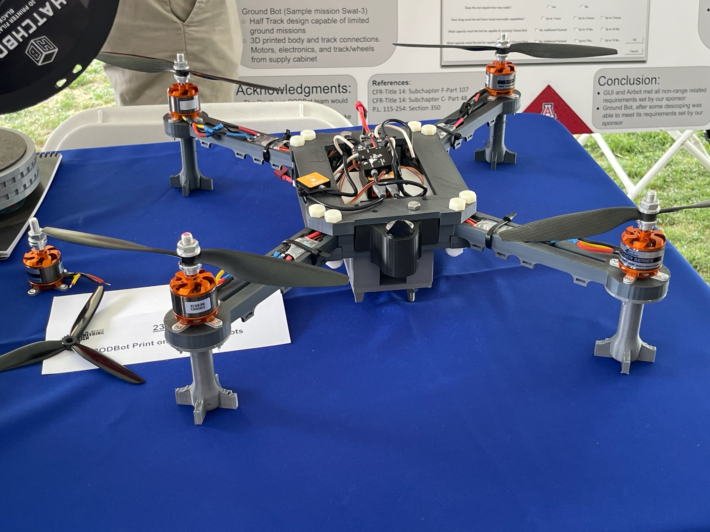
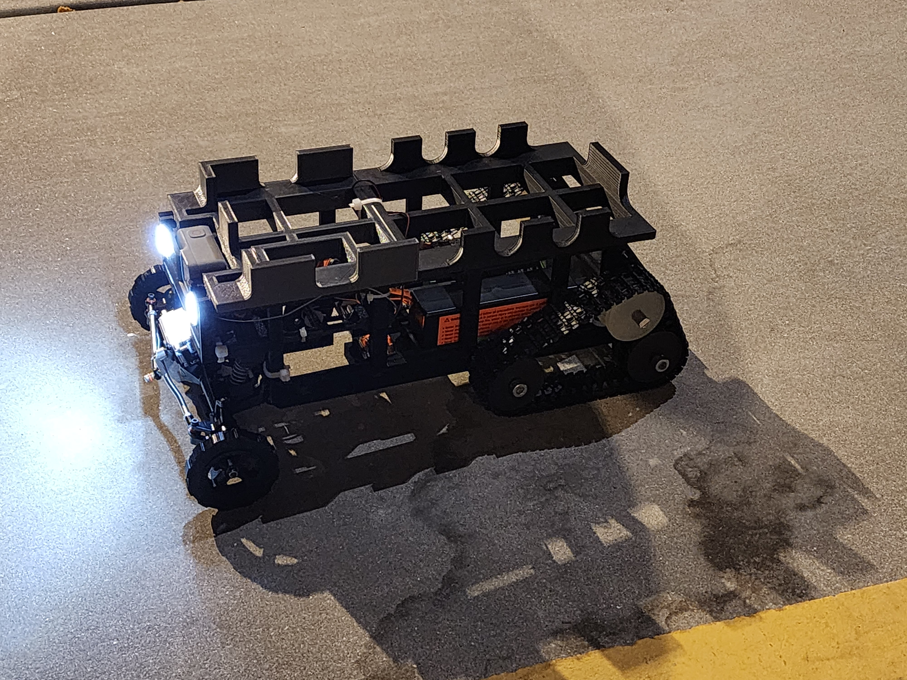

What is PODBot Phase II
Introduction content goes here.
OV-1
Operational View 1 content goes here.
Key Differences Between Phase II and Phase I
Key Differences go here.
Target Audience
Target Audience content goes here.

Inheritance from PODBot Phase I
PODBot Phase I was a very successful project that developed both an AirBot and GroundBot for the following missions.
AirBot
Mission: Reconnaissance Hostage Situation
Objective: To provide on-site but covert/low observable imaging and possible communication links

GroundBot
Mission: Ammo Re-Supply
Objective: To provide ammunition to entrenched SWAT in an armed standoff
